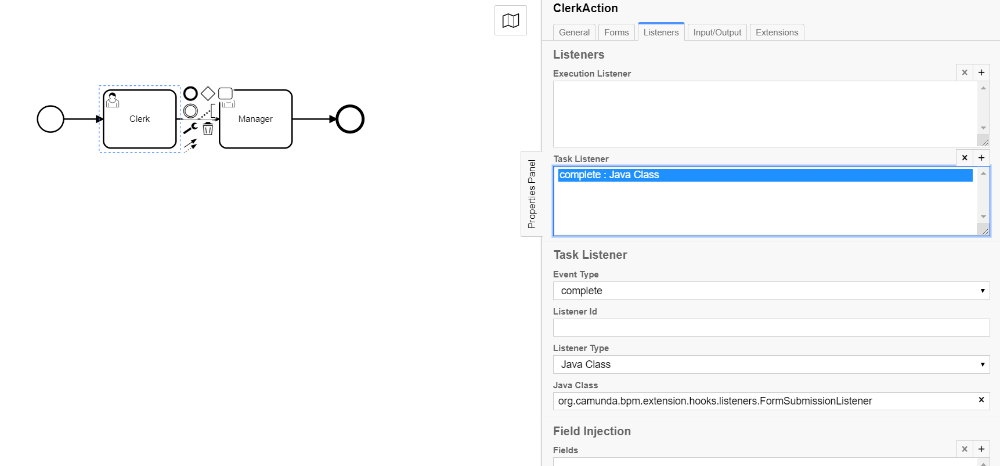

<article class="docs-article">
    <section class="docs-section" id="listeners">
        <div>
            <h2 id="form-submission-listener">Form Submission Listener</h2>
            <hr>
            <p><strong>org.camunda.bpm.extension.hooks.listeners.FormSubmissionListener</strong></p>
            <p>This component can be used on any event of task/execution listener. Upon
                configuration, it creates a
                new submission from the current submission.</p>
            <h3 id="table-of-content">Table of Content</h3>
            <ul>
                <li><a href="#type">Type</a></li>
                <li><a href="#how-it-works">How it Works</a></li>
                <li><a href="#how-to-use">How to Use</a></li>
            </ul>
            <h3 id="type">Type</h3>
            <p>Task/Execution Listener</p>
            <h3 id="how-it-works">How it Works</h3>
            <p>This component from the current formUrl create a new revision and set that as a CAM
                variable.</p>
            <ul>
                <li>[STEP 1] - Create a new submissionId using the existing form data.</li>
                <li>[STEP 2] - Set the new formUrl with CAM variables</li>
            </ul>
            <p>The component is dependent on listed variables from camunda context,</p>
            <ol>
                <li>formUrl</li>
            </ol>
            <h3 id="how-to-use">How to Use</h3>
            <p>Below snapshot shows how to configure the <strong>FormSubmissionListener</strong> to
                a task. </p>
            <p><br><br>
                Click here <a href="forms-flow-bpm Listeners">forms-flow-bpm Listeners</a></p>

        </div>
        </section>
        </article>
        